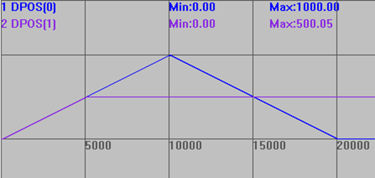
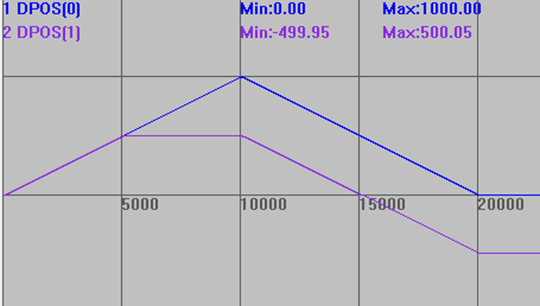

|
类型 |
轴参数 |
|
描述 |
设置BIT1=1，防止限位和软限位导致CONNECT运动退出。
BIT1=0，当从轴碰到限位时，主从轴的CONNECT连接关系断开，消除限位报警后，此时操作主轴，从轴不再跟随； BIT1=1，碰到限位后仍然保持连接关系，消除报警后，从轴仍然保持关联。 BIT5 =0，缺省设置，主轴带编码器时优先跟踪MPOS。 BIT5=1，设置在齿轮或凸轮运动的主轴上，强制指定跟踪主轴的DPOS， 涉及的指令：CAMBOX、CONNECT、MOVELINK、MOVESLINK、MOVESYNC、HW_PSWITCH2。 BIT8=0(缺省)，=1时，CLUTCH_RATE=0时的跟踪方式响应更快，当速度超过目标速度，加速度超过目标加速度2倍时，跟踪滞后很小。4系列以上，version_build:240226增加.
注意：硬限位在运动过程中触发且限位方向与运动方向一致会导致同步断开 固件版本20170616及以上支持此功能。 |
|
语法 |
VAR1 = AXIS_MODE，AXIS_MODE = expression |
|
例程 |
例一：不设置AXIS_MODE参数 RAPIDSTOP(2) WAIT IDLE BASE(0,1) ATYPE=1,1 UNITS=100,100 DPOS=0,0 SPEED=100,100 ACCEL=1000,1000 DECEL=1000,1000 AXIS_MODE=0,0 '设置参数 FS_LIMIT=1000,500 TRIGGER '自动触发示波器 CONNECT(1,0) AXIS(1) '轴1连接到轴0，比例为1 MOVE(1000) AXIS(0) MOVE(-1000) AXIS(0)
运动轨迹如下： DPOS(0)垂直刻度1000，无偏移 DPOS(1)垂直刻度1000，无偏移  轴1碰到限位后停止，和轴0的connect连接断开，后续轴0的运动与轴1无关。
例二：设置AXIS_MODE参数 RAPIDSTOP(2) WAIT IDLE BASE(0,1) ATYPE=1,1 UNITS=100,100 DPOS=0,0 SPEED=100,100 ACCEL=1000,1000 DECEL=1000,1000 AXIS_MODE=0,2 FS_LIMIT=1000,500 TRIGGER '自动触发示波器 CONNECT(1,0) AXIS(1) '轴1连接到轴0，比例为1 MOVE(1000) AXIS(0) MOVE(-1000) AXIS(0) 运动轨迹如下： DPOS(0)垂直刻度1000，无偏移 DPOS(1)垂直刻度1000，无偏移  轴1碰到限位后停止，但和轴0的connect并未断开，运动到限位位置内，跟随轴0运动。 |
|
适用控制器 |
通用 |
|
相关指令 |